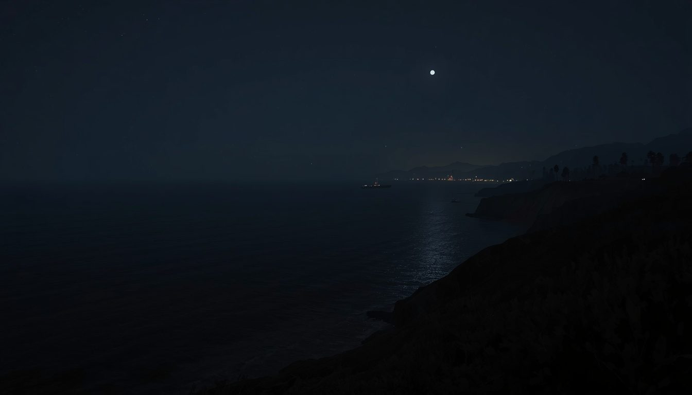

Story · the land
The ground before the game.
The bluffs at Sandpiper were an oil field, and for one night a front line, long before they were a golf course.

Drive west along Hollister Avenue and the coast opens up: bluffs, a thin line of surf, the Channel Islands on a clear day. For most of the last century, though, the land's business here was crude, not golf.
Oil was struck on this stretch of the Goleta coast in the late 1920s, and the Ellwood field went to work — derricks and piers on the bluffs, a refinery near the water. The same edge that now frames the back nine was an industrial coastline.
Where the land meets the water.
Schematic — not to scale. The front nine works the rolling ground inland; the back nine falls to the bluff, where holes 10–14 run the water's edge.

February 23
1942
A Japanese submarine, I-17, surfaced offshore and shelled the Ellwood oil facility — the first attack on the United States mainland in the Second World War. The damage was minor; the meaning was not. The bluffs where players now stand on the tenth tee were, for one night, a target.
Oil production wound down over the following decades. In 1972 the same bluffs opened as a golf course — William F. Bell's routing laid along the edge where the refinery had stood.

Oil struck at the Ellwood field on the Goleta bluffs.
Feb 23 — submarine I-17 shells the Ellwood facility; the first attack on the U.S. mainland in the war.
Oil production on the site winds down.
The land opens as a golf course — a William F. Bell design.
Editorial note: sources differ on the oil-era dates (Ellwood field, roughly 1927–1965, versus ARCO production cited as 1938–1954). The discrepancy is recorded here rather than smoothed over; the wartime date is well documented.

It's an unusual lineage for a golf course, and worth keeping honest: no myth-making, just ground that has carried several lives.
Sources
- Santa Barbara News-Press; edhat — Ellwood oil-field history and the 1942 shelling (accessed Jul 3, 2026).
- Golf Digest course profile — William F. Bell, 1972 opening (accessed Jul 3, 2026).
- Oil-era date discrepancy noted across the above; unresolved.